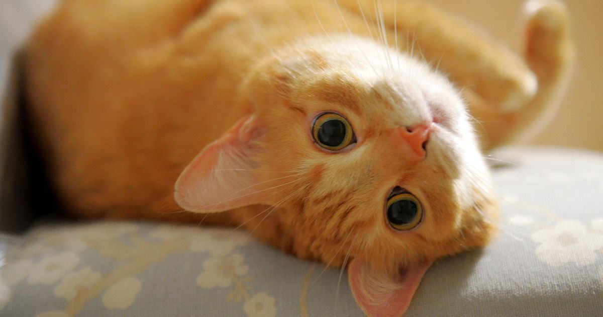
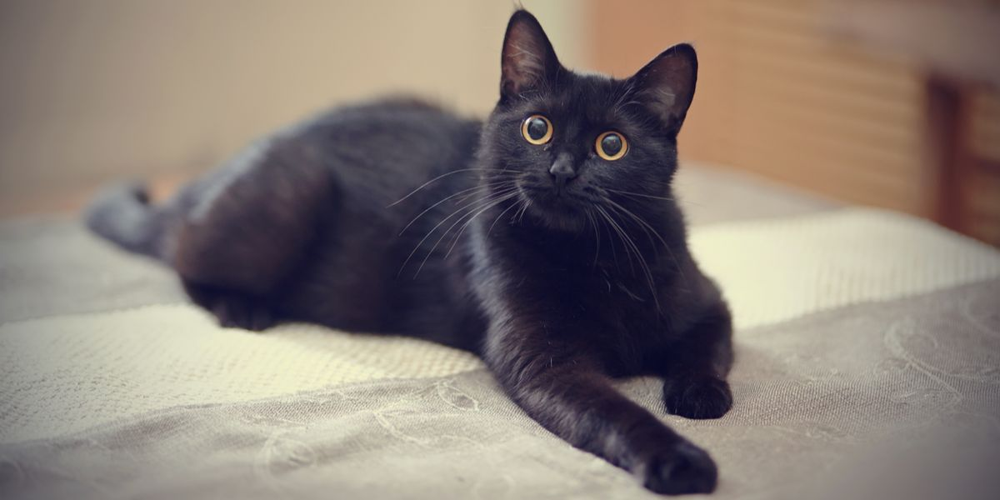
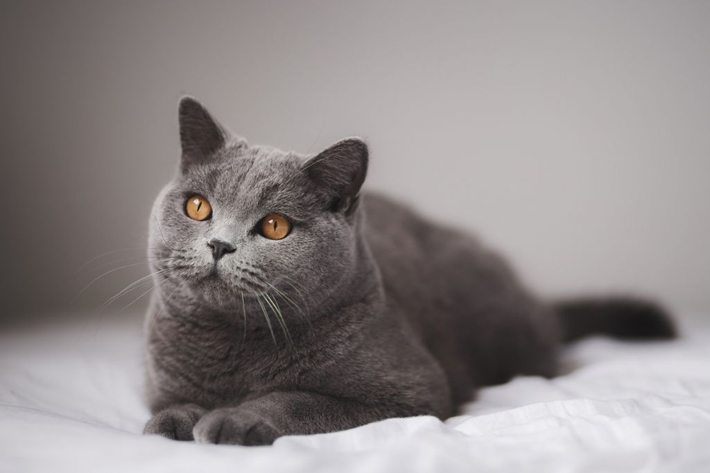

Atención: Todo lo que se presenta a continuación es una recopilación de estereotipos, percepciones, fantasías y el amor de la autora. Hay pocos hechos científicamente comprobados y confiables, si es que hay. El carácter de los gatitos depende de su raza, educación y características individuales. Esta página fue creada con fines de entretenimiento, no para enseñar ni para difundir información. La información cierta puedes encontrar en "Los hechos reales"
Las criaturas más misteriosas y extrañas a la vez
¿Alguna vez has encontrado algo tan contradictorio que te deja asombrado? Algo que combine tanto lo negro como lo blanco. Algo que sea elegante y altivo, pero a la vez juguetón y amoroso. Si es así, y estas cosas te fascinan, entonces está página te gustará. Y si no, ¡prepárate para conocerlas ahora!
Los gatos en la vida
Los gatos son criaturas que no están sujetas a ninguna regla, e incluso a veces a las leyes de la física. En sus vidas, se manifiestan y muestran sus caracteres de las maneras más diversas. Desde los poderosos depredadores, los gatos callejeros, hasta los adorables y juguetones compañeros domésticos. En las vidas de los seres humanos, los gatos ocupan un lugar especial en los corazones de muchos. Antiguamente, incluso los consideraban dioses, aunque ahora la percepción ha cambiado un poco, pero el cariño y el amor no.
¿Cómo son?
Los gatos son muy distintos. Cada uno tiene su propio carácter, pero en algo se parecen entre si. Por ejemplo, los gatos naranjas: ( personalmente mis favoritos)
Naranjas
- Sencillez: los gatos naranjas en su naturaleza son criaturas muy simples. Y en esto radica su belleza. Es una parte de su carácter muy linda e importante.
- Juguetonería: también es una característica distintiva brillante. Los gatos naranjas son los más activos y divertidos. A veces, o mejor dicho, a menudo, incluso graciosos.
- Tontería e ingenuidad: son de mis características favoritas en ellos. Eso es lo que hace los gatos de este tipo tan únicos y tan especiales (como Lucía a veces). Te creen fácilmente y te aman sinceramente.
- Impulsividad: imagina estar descansando tranquilamente en tu casa y que, de repente, y absolutamente sin ninguna razón, una bolita de pelo te muerda. No lo esperabas, ¿verdad? ¡Pero eso no es todo! Espera un poco y el naranja vendrá todo amable y cariñoso cinco minutos después.
Los gatos naranjas son buenos, sinceros y lindos. Pero los gatos así necesitan un dueño que los entienda, que pueda seguir su ritmo y, a veces, incluso aguantar su carácter, porque los gatos así no siempre saben pararse y controlarse. Y a veces me identifico mucho con ellos :3
Blancos
Pura elegancia y coquetería. Los gatos blancos normalmente se asocian con la feminidad y la belleza.
- Elegancia: los gatos blancos son tranquilos y cuidadosos
- Pulcritud: ¿Se ensució mi pelaje? ¡Todos quietos! Me voy a limpiar y luego continuamos.
- Dulzura: son extremadamente tiernos y cariñosos, siempre buscan el afecto y la atención, pero lo hacen de manera muy sutil, como si su ternura fuera un arte.
- Serenidad: menudo se los ve tranquilos, como si siempre estuvieran en control de la situación, con una postura casi real.
- Sensibilidad: son muy sensibles a su entorno, y pueden detectar fácilmente las emociones de las personas, respondiendo con una calma
Negros
También me gustan mucho. En algo parecen a los blancos, como en su tranquilidad, por ejemplo. Y en los naranjas por la energía que tienen.
- Independencia: los gatos negros son más independientes. Les gusta explorar por su cuenta y, a veces, pueden parecer un poco distantes. Pero es solo su manera especial de ser. Ellos eligen a su dueño, y cuando lo hacen, la relación se vuelve muy fuerte y significativa. Su lealtad es tranquila, pero siempre está ahí.
- Carácter fuerte: tienen una personalidad firme, como si supieran mucho más de lo que muestran. No siempre buscan atención, pero cuando lo hacen, lo hacen con mucha intensidad. Son juguetones y a veces traviesos, pero también tienen una sabiduría especial. Todo lo que hacen parece tener un propósito.
- Valor y protección: los gatos negros son conocidos por ser valientes. Tienen una actitud que transmite seguridad, como si pudieran enfrentarse a cualquier cosa. Son protectores con su hogar y con los que aman, siempre atentos, siempre vigilantes. Si eres afortunado de ser su compañero, te sentirás seguro y respaldado.
- Calidez oculta: aunque son misteriosos, los gatos negros también son increíblemente tiernos. No necesitan ser ruidosos para mostrar cariño. Su amor es suave y profundo. Un ronroneo o un toque con su pata es su manera de decir "Te quiero" sin palabras.
Los gatos negros al principio pueden parecer distantes y fríos, pero cuando te ganan su confianza, puedes ver una cara completamente diferente. Son ingenuos y juguetones, a veces incluso se parecen a esos gatos naranjas torpes y llenos de energía.
Grises
Los gatos grises se parecen a todos a la vez. Se puede decir que son una mezcla, un equilibrio entre la juguetonería y la tranquilidad.
- Cariñosos, pero selectivos: los gatitos grises pueden ser amorosos y afectuosos, pero solo con su gente, lo que los hace parecerse a los gatos negros. Valoran su espacio y suelen mostrar precaución, e incluso a veces cierto rechazo, hacia los extraños. Son como introvertidos felinos.
- Inteligencia y astucia: los gatos grises a menudo son considerados especialmente inteligentes. Se les atribuye la capacidad de aprender rápido y entender a su dueño con solo una mirada.
- Lealtad y confianza: son más confiables en sus relaciones con las personas: se toman su tiempo para observar, y luego se convierten en verdaderos amigos.
- Tranquilidad y equilibrio: Los gatos grises a menudo se describen como más tranquilos que sus compañeros rojizos o multicolores. Parece que prefieren observar lo que sucede en lugar de lanzarse de lleno a juegos activos.
A veces los gatos grises me recuerdan a personas tranquilas e inteligentes, que pueden parecerme interesantes, pero a quienes no les interesa nadie más que sus personas.
